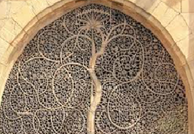

Atal bridge, Ahmedabad
• This iconic Atal bridge is first of its kind in the country.it will connect
west and east part of sabarmati riverfront from thekites and the celebration of uttaryan.
even the colours chosen reflects the hues of kites.to fee the joy of walking above the river,
this glass Atal bridge is constructed between sardar bridge and ellis bridge. the brudge is solely for
the walking purpose and also having seating arrangements for the people to enjoy the beauty
of the river from bridge.
Kankaria Lake, Ahmedabad
•
Kankaria Lake is the second largest lake in Ahmedabad, Gujarat, India. It is located in the south-eastern
part of the city, in the Maninagar area. It was completed in 1451 during the reign of Sultan Qutb-ud-Din Ahmad Shah II though its origin is placed in the Chaulukya period sometimes. A lakefront is developed around
it, which has many public attractions such as a zoo, toy train, kids city, tethered balloon ride, water rides,
water park, food stalls, and entertainment facilities. The lakefront was revamped in 2007–2008. Kankaria
Carnival is a week-long festival held here in the last week of December. Many cultural, art, and social
activities are organised during the carnival.
Science city, Ahmedabad
• Gujarat Science City is located in Hebatpur in Ahmedabad behind Sarkhej-Gandhinagar highway . Science CT is an ambitious effort of
the Government of Gujarat to create curiosity about science in the mind of the
common citizen with the use of entertainment and experiential knowledge. Covering an area of over 107 hectares, Gujarat Science City aims
to create imaginative exhibits, practical realistic activity spaces and live
demonstrations that are easily understood.
Siddi saiyed mosque, Ahmedabad

•The Siddi Sayed Mosque is famed for its exquisite jali windows, spider web fine, depicting the intricate intertwining
branches of the 'tree of life' that is best seen from the road that runs along the back of the
mosque. The central arch of the mosque is also bereft of the intricate latticework, making the eyes go straight to the main
stunning work at the back wall. The mosque still functions as a place of prayer.
Adalaj stepwell, Ahmedabad
• Adalaj ni Vav or Rudabai's Vav is a stepwell located in the village of Adalaj due to which it is known as Adalaj ni Vav.
It is close to Ahmedabad city and in Gandhinagar district in the Indian state of Gujarat.
It was built in 1498 by Rana Veer Singh of the Vaghela dynasty of Dandai Desh. It is an example of Indian Architecture work.
The step well or 'Vav', as it is called in Gujarati, is intricately carved and is five stor